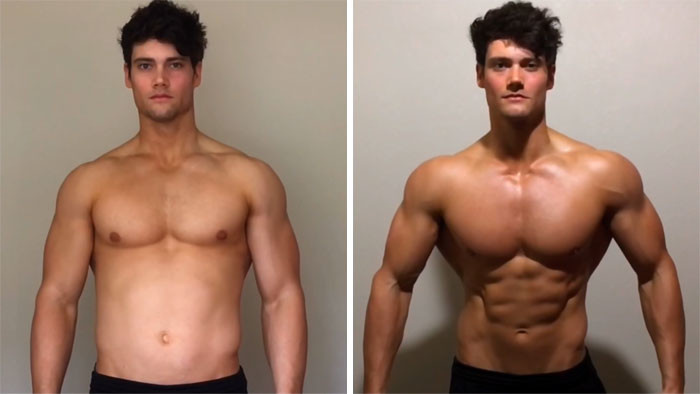

EXCLUSIVO:
DWAYNE JOHNSON FUE ECHADO DESDE EL PLATÓ DE "Ballers" EN CUANTO EL ESTUDIO PROHIBIÓ USAR "LA SUSTANCIA PROHIBIDA "
"Si lo tuviera de joven, podría pasar mucho más tiempo de vacaciones y menos tiempo en el gimnasio sin preocuparme por la planificación de mi alimentación ". - Dwayne Johnson
(CNN) – Una vez notificado por el canal HBO sobre el hecho de rescindir el contrato de participación en la serie popular "Ballers" con Scala, Scala realizó la conferencia de prensa para informar de su propia versión de los hechos.
Dwayne Johnson, un restler de 45 años de edad que se hizo actor confirma no haber hecho nada malo, dice que en la nueva política de la cadena de televisión sobre las pruebas de dopaje todavía habrá que resolver algunos problemas serios. Scala declaró que “todo eso era un gran malentendido” una vez confirmado por el presidente de HBO, Michael Lombardo, que el remedio no estaría cubierto por el seguro contra lesiones para los actores.
A principios de este año HBO empezó una investigación para averiguar qué modos y complementos usan los actores profesionales para poder estar en forma tan perfecta para la gran pantalla en las pausas cortas entre las películas.
Dwayne aseguró a los medios de comunicación que no tomaba ningunas sustancias prohibidas y que su dieta consiste solo en los complementos legales que toman todos los actores principales cuando tienen que estar en forma para desempeñar un papel.
Una vez realizada esta declaración, pudimos entrevistar al actor mismo para enterarse más de su reacción a las acusaciones del estudio.
Por muy chocante que pareciera esta historia, todavía no es todo...
Scala está en perfecta forma física y psicológica. Muchos pensaban que alcanzó sus tamaños y valores de fuerza gracias a los métodos tradicionales de entrenamiento y complementos, pero, al parecer, no es así. Confesó que toma un complemento determinado si necesita estar en forma rápido antes de desempeñar un nuevo papel.

"Antes de que lo puedan juzgar, diré que es un remedio 100% natural", - se defendía Johnson.
Cuando preguntamos si no considera que tomar un complemento es injusto o engañoso, Dwayne se echó a reír.
"Primero, todos usan este complemento, me refiero a todos, no solo a los actores de Hollywood, sino a los de todos los tipos de deporte principales. Es muy normal, porque el mismo no está prohibido y no contiene drogas. Es un verdadero fármaco. El mejor estimulador ", - dijo Johnson sonriendo. "Da igual si uno es actor o no, cualquier hombre de cualquier edad puede sin ninguna duda sacar provecho en caso de tomar este fármaco a diario".
Un complemento popular destinada para quemar la grasa, ganar la masa muscular, aumentar la energía y el rendimiento, se llama Fortumax. Es un producto popular que toman muchos deportistas, pero se está contemplando para la prohibición de todas las entidades deportivas de la liga superior por dos causas:
1. ¡Fue comprobado que el complemento aumenta la velocidad de crecimiento de los músculos más o menos un 150%! Esto hará que el deportista como Dwayne Johnson sea más fuerte que "cualquier deportista de cualquier tipo de deporte".
2. No es obligatorio usar estos complementos junto con el gimnasio. Los usuarios reciben un crecimiento masivo de músculos y pierden la grasa sin levantar ni un solo peso. Muchas comisiones deportivas de todo el mundo consideran que este truco orgánico es ·una estafa” porque no requiere casi ningún esfuerzo por parte del usuario.
Una vez difundida la declaración de Dwayne Johnson sobre Fortumax rápidamente, HBO recibió miles de mensajes de nuestros lectores. Al intentar contestar a las preguntas de nuestros lectores y averiguar cómo Fortumax ayudó a Dwayne Johnson, decidimos hacer las pruebas del mismo en una investigación exclusiva de CNN.
"Es un remedio capaz de aumentar la masa muscular un 400% sin ir al gimnasio". -Doctor Oz
ESTE MOVIMIENTO QUE UNE INCLUYE A LOS HOMBRES DE TODAS LAS EDADES QUE GANAN LOS MÚSCULOS... ¡EN UN INSTANTE!
Lo llaman “La guerra contra la barriga cervecera”. Millones de hombres mayores se unen para ganar los músculos como nunca antes y mejorar la relación de la grasa y los músculos, al mejorar así mismo el estado general de salud. Muchos de ellos hacen un paso atrás y tienen cuerpos con músculos en pocas semanas. En un informe especial publicado esta semana el doctor Oz llamó el movimiento de Internet "la tendencia más popular en la ciencia sobre la salud masculina".
Este movimiento fue provocado por una investigación que duró 10 años publicada el mes pasado. Los investigadores de la escuela de medicina de Harvard detectaron las consecuencias reales de la baja masa muscular. Las conclusiones de la investigación se resumen en dos partes: Primero, un 93% de los hombres norteamericanos mejores de 40 años no tienen nivel sano de masa muscular, y, segundo, la relación de la grasa y la baja masa muscular es el factor más importante para valorar la salud de los hombres mayores de 40 años. La alta relación de la grasa y la baja masa muscular provoca muchos problemas de salud, incluidas las enfermedades psíquicas, la libido baja, la disfunción eréctil, el cansancio y la depresión.
Al difundir los resultados de la investigación, en todo el mundo se extendió una ola de respeto al nuevo fármaco revolucionario. Se llama Fortumax y estaba presentado casi en todos los medios de comunicación más importantes conocidos.

"Este remedio destruye "la barriga cervecera" de forma sistemática. Empecé a usar Fortumax y perdí 6 kilos en una semana sin ningún cambio de dieta o de modo de vivir." -Doctor Phil
LOS HOMBRES DE TODO EL MUNDO SE UNEN EN LA GUERRA CONTRA MUCHA GRASA EN EL CUERPO Y LA BAJA MASA MUSCULAR. ¿VD. ES EL SIGUIENTE?
Mientras estaba estudiando este movimiento de forma detallada, quedó claro en qué estaba basado el mismo. Era un nuevo complemento revolucionario llamado Fortumax. Es una mezcla exclusiva de ingredientes naturales de la Asia de Sureste, Paraguay y Botsuana que provocan los cambios increíbles en el cuerpo.
"La barriga cervecera" – no son músculos, no es la fuerza ni la salud. Es un enemigo de millares de hombres de todo el mundo que no tienen tiempo para ir al gimnasio ni para las dietas bien pensadas ". – Rafael Pérez (arriba)
"Llevo esta camiseta para recordar a la gente que "la barriga cervecera" está muerta, a las chicas les gustan los músculos sólidos y no las barrigas blandas ". – Emilio Zellac (arriba)
FUE CLÍNICAMENTE COMPROBADO que Fortumax:
- Aumenta la energía
- Provoca el crecimiento de los músculos
- Aumenta la líbido
- Mejora el metabolismo
- Proporciona múltiples antioxidantes
- Quitan las toxinas
Fortumax INGREDIENTES ÚNICOS:
L-ARGININA
Aminoácido Alpha natural que funciona como hemodilatador y aumenta el nivel de óxido de nitrógeno en el cuerpo, al limpiar el sistema cardiovascular y al abrirlo para la mejor digestión de las sustancias nutritivas. El fermento de síntesis de óxido de nitrógeno también mejora la dilatación de los vasos al prevenir la obstrucción de las arterias (ateroesclerosis), la enfermedad coronaria, los ataques cardiacos y otras enfermedades cardiovasculares.
ESPINACAS
Uno de los antioxidantes naturales más potentes. Es elemento clave de las membranas de células y no permite que las toxinas penetren en las células del hígado. Las primeras investigaciones de laboratorio demuestran que las sustancias activas de espinacas pueden aumentar la longevidad de las células de Su cuerpo.
HINOJO
Los diterpenoides del hinojo (un compuesto activo) son un remedio potente para bajar el peso. Las investigaciones clínicas demuestran que el mismo ayuda a “disolver” de forma más rápida y eficaz el tejido de grasa. Esta sustancia nutritiva única también es conocida para los que padecen de insomnio y otros trastornos de sueño como remedio potente para relajarse.
KUMQUAT(FORTUNELLA)
Es uno de los secretos más sagrados de Asia: kumquat se administra para mejorar la virilidad y la líbido. Además del efecto afrodisiaco, el kumquat también aumenta la producción de semen y puede funcionar directamente como remedio prorectil. Por lo menos, una molécula de kumquat (9-hydroxycanthin-6-on) está vinculada tanto con la eyaculación retrasada como con las propiedades proerectiles.
Examinar Fortumax
SEMANA 1
Los resultados de la primera semana eran rápidos e impactantes. Mi nivel de energía aumentó de repente. Un efecto secundario inesperado pero muy placentero de las gotas Fortumax era lo siguiente: hacían que no tuviera más apetito (lo cual, francamente dicho, me hizo sentirme de forma fantástica). Lo más importante es que no tuve que cambiar nada en mi rutina diaria o dieta.
Solo 7 días más tarde por primera vez pesaba menos de 90 kg... además gané 1,3 kg asombroso de masa muscular pura. Estoy asombrado, pero no muy convencido. Al fin y al cabo, puede ser el peso de líquido que perdí (igual que pasa con muchos otros programas) – y deseo ver si mi masa muscular sigue creciendo después de este primer intento.
SEMANA 2
Durante la segunda semana estoy lleno de energía como siempre, y duermo perfectamente por primera vez en muchos años desde mi adolescencia. Ya no doy más vueltas y no me despierto por la noche. Mi cuerpo realmente descansa (creo que gracias a las propiedades detox de las gotas Fortumax).
Durante la segunda semana conseguí perder 2.2 kg más – los 84 kg increíbles solo en 2 semanas. También noté que se me aparecían 6 abdominales que le gustaban mucho a mi mujer. Actualmente empiezo a pensar que estos productos llevan algo más que pensaba al principio.
SEMANA 3
Todas mis dudas desaparecieron. Normalmente, más o menos durante la 3 semana de otros programas uno empieza a cansarse. Pero con las gotas Fortumax mi nivel de energía no bajó nada. Además, sigue siendo estable durante todo el día.
Par aquel momento gané 5,6 kg importantes de la musa muscular pura, y mi peso total supera ligeramente 86 kg. Toda la grasa del vientre desapareció, y por primera vez en la vida puedo jactarme de 6 abdominales perfectos. Francamente dicho, estoy encantado.
SEMANA 4
El experimento "Superman" me dejó sin palabras. Gané 7,2 kg de la masa muscular y ahora peso 84,5 kg – es una transformación impresionante comparado con el peso anterior.
Gracias a las gotas Fortumax, ahora tengo cuerpo (y lívido) de un chico de 25 años de edad. Mi mujer apenas me sigue en la cama y las miradas que recibo en los centros comerciales no tienen precio.
Mis resultados: En 30 días de tomar Fortumax perdí la grasa visible y aumenté bastante la masa muscular.
¡Denzel Washington recomienda tomar Fortumax unos 15 minutos antes del acto sexual para llegar a los resultados máximos!
Actualización: VOLUMEN LIMITADO DE FORTUMAX CON UN DESCUENTO DE -50% A fecha de : la oferta sigue siendo válida!

Antes y después
"¡Con la edad descubrí que siempre tengo más pereza y así descubrí Fortumax! He tenido tanta suerte con este producto milagroso. Transformó mi cuerpo totalmente en un instante. ¡Tengo mejor aspecto y me siento mejor que nunca!" – José Nieto, Ciudad Real
"Es simplemente asombroso. Los resultados han sido muy rápidos. ¡Los resultados reales! Literalmente vi los resultados después del primer día. Os estoy muy agradecido, me gusta mi nuevo cuerpo... ¡Y a mi mujer también!" – Antonio Menéndez, Salamanca
"Me gusta mi nuevo cuerpo y me gusta lo que veo en el espejo. ¡He probado decenas de productos y procedimientos, pero ninguno funcionó mejor que Fortumax! ¡Gracias por ayudarme a descubrirlo!" – Juan Fernández, Jaén
"Solo lamento no haber podido encontrarlo antes. ¡Los resultados eran tan chocantes que no me lo pude creer, no parecía mi propio cuerpo!" – Carlos Santana, Oviedo
"Si está luchando para perder la grasa que sobra y ganar la masa muscular, debe probarlo. ¡Su popularidad es real, y este remedio realmente funciona!" – Fernando Gamboa, Sevilla

"Solo lamento no haber podido encontrarlo antes. ¡Los resultados eran tan chocantes que no me lo pude creer, no parecía mi propio cuerpo!" – Manuel Nieto, Madrid

"Han pasado 2 semanas y nunca me parecí mejor." – Lucas Garrido, Barcelona
¡Denzel Washington recomienda tomar Fortumax unos 15 minutos antes del acto sexual para llegar a los resultados máximos!
Actualización: VOLUMEN LIMITADO DE FORTUMAX CON UN DESCUENTO DE -50% A fecha de : la oferta sigue siendo válida!

ÚLTIMOS COMENTARIOS
Tomas Álves
Al carajo lo del gimnasio. Solía pasar semanas allí y pagaba muchísimo dinero al entrenador... solo para ver los resultados mínimos. Mejoré mi actitud, comía sano, dormía bien y me entrenaba a diario, pero nada puede compararse con Fortumax. Estoy muy contento por descubrir este producto. Tenía muchas dudas, sobre todo tomando en cuenta lo que tardé en los intentos de adelgazar, pero en menos de 4 semanas perdí 17 kilos. jajaja.
Contestar . 13 . Me gusta . Hace 12 minutos
Tomás Soler
Soy entrenador personal lo cual significa que entreno a la gente para que pierdan la grasa al mantener sus músculos. Por esta causa tengo preguntas para personas que usan pastillas para adelgazar. La mayoría de las pastillas para adelgazar queman los músculos al quemar la grasa. Me gusta Fortumax porque aumenta los músculos y quema la grasa. Lo recomiendo a las personas que entreno.
Contestar . 14 . Me gusta . Hace 16 minutos
Pablo P.
Es un fármaco fantástico. Durante muchos años probaba proteína, queratina y pastillas para adelgazar y lo único que conseguí con los mismos es llenarme con las sustancias nocivas cada vez que los usaba. Fortumax es el primer fármaco que me ayudó. Gané una tonelada de músculos y perdí la grasa, igual que pone en el artículo.
Contestar . 2 . Me gusta . Hace 1 hora
Carlos Saura
Fortumax quita el apetito de forma perfecta. Sigo comiendo mucho, pero no tengo ganas de comer comida basura, como solía hacer.
Contestar . 13 . Me gusta . Hace 12 minutos
Fernando Sánchez
Es un fármaco perfecto simplemente porque funciona igual que lo prometido en la promoción.
Contestar . 13 . Me gusta . Hace 12 minutos